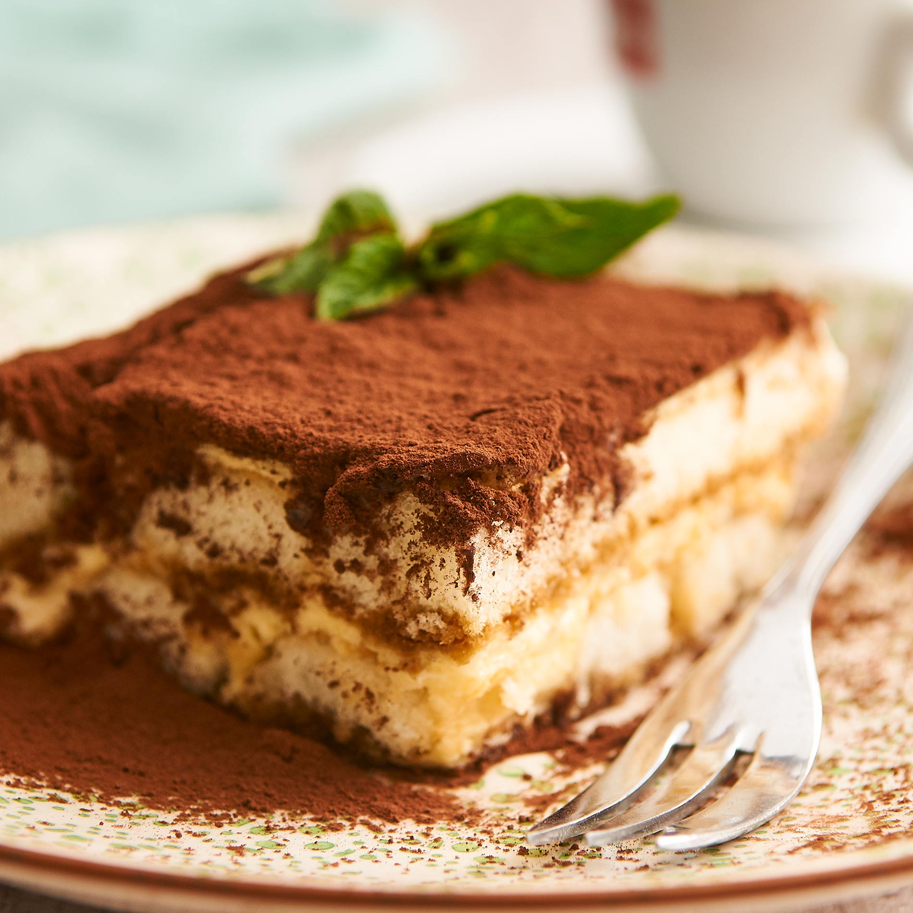

Homepage
Italien Tiramisu

Italian Tiramisu
This recipe is an authentic Italian Tiramisu
Ingredients
- 4 Eggs
- Sugar 70g
- 500g Mascarpone
- 100g Löffelbiscuit 1-1,5 Verpackungen Löffelbiscuits
- 8El Coffee
- 8El Milk
- Garlic clove
Steps
- Seperate the Egg white from the Egg yolk
- In two seperate bowls mix the egg white with 30g Sugar and the egg yolk with 40g in the other
- Das Eigelb mit einem Mixer aufschlagen und nachdem es schaumig weiß ist mit dem Mixer und der Mascarpone vermischen
- Dannn das Eiweiß schlagen bis man das eiweiß umdrehen kann un es nicht mehr aus der schüssel fließt/fällt
- Das Eiweiß dann mit einem Löffel unterheben und vorsichtig vermischen
- Mischung aus Kaffee und Milch 2/3 Kaffe 1/3 Milch
- Alle Seiten der Löffelbiscuits an der Seite einen Kaffelöffel runterlaufen lassen